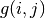
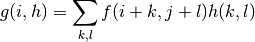

Title of Doc comes here¶
Goals¶
Explain here following things:
- What is this tutorial about ? What you will learn here?
- What are all new functions you will see here (eg :ocv:func:`borderInterpolate`)
Theory¶
- Some intuitive explanation of algorithm is given here
- If needed, give some equations as inline  or next line as,

- If required, a Numpy implementation of algorithm also can be given as a separate subsection
Subsection Python Implementation [optional]¶
Numpy code comes here. To add code, do as follows :
import cv2
import numpy as np
print 'import done'
OpenCV sample¶
Here comes the original OpenCV code with explanation. Result also can included in this itself.
To add image, do as follows :

Notes, warnings, Todo etc can be done as follows :
Note
The explanation below belongs to the book
Warning
The explanation below belongs to the book
Todo
The explanation below belongs to the book
See also
The explanation below belongs to the book
external urls are given as Python which points to python site.
Internal url is called as Tutorial-Template
A book is cited as [Szeliski]
Common Errors [optional]¶
We can show solutions for some common mistakes while using certain functionalities, if any.
Exercises [optional]¶
Here we can give some additional tasks for reader to do
- like read and understand more advanced code on the same algorithm.
- Related SOF and answers.opencv.org questions
- Our own questions or tasks
References [optional]¶
Give references if any for better understanding of algorithm, like any standard textbooks, web links etc. Numbered references are given as
- Learning OpenCV
- Computer Vision Models
| [Szeliski] | Computer Vision Models |